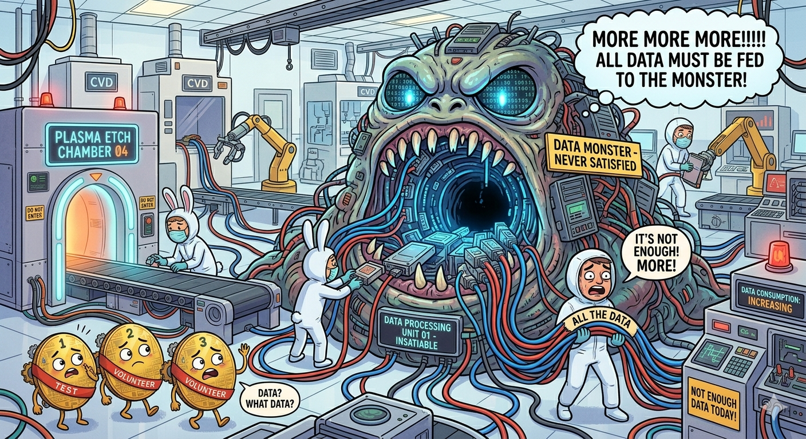
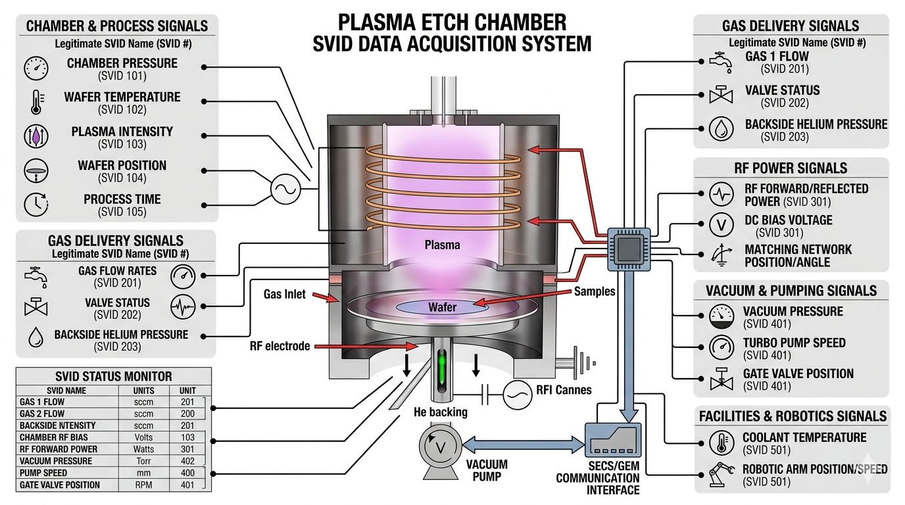
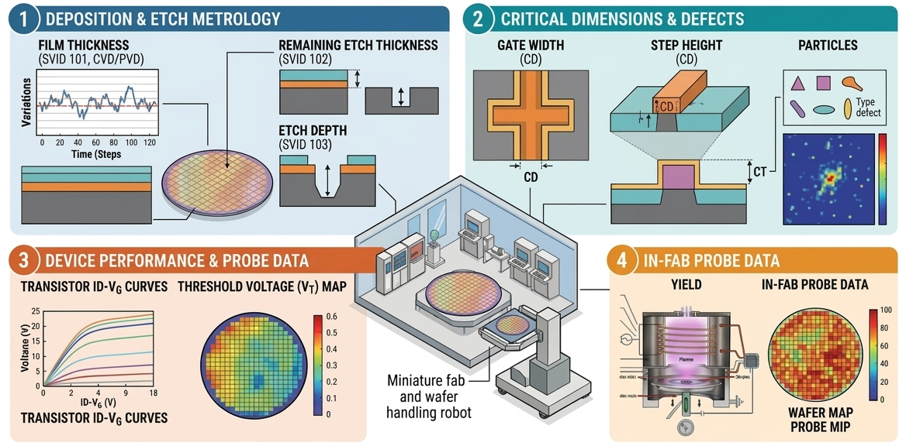
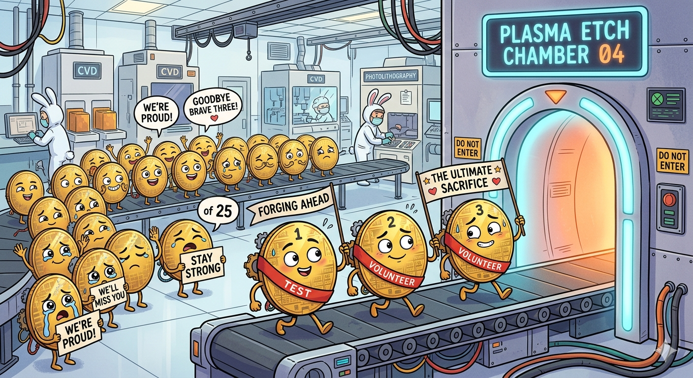

In-depth look at semiconductor fab data and automation.
Semiconductor Fabs I: The Equipment
Semiconductor Fabs II: The Operation
Semiconductor Fabs III: The Data and Automation
Semiconductor Fabs IV: The Safety
I tried to include as many links as possible to allow the reader to go down rabbit holes as they see fit.
I tried to include analogies in case the explanation is poor or the topic esoteric.
I don't work in an advanced fab, but have some glimpses into them, so I rely on my ideas, conjecture, and the literature for a more accurate representation of what state-of-the-art fabs look like (although I'm sure there are features I could never dream of).
I first go over the data side of things, since a lot of that is fundamental to how the automation operates.
Fabs are incredibly hungry for data. Insatiably hungry. Data helps to connect patterns, solve problems, troubleshoot issues, and just plain understand what the heck is going on at the atomic level where the transistors and interconnects are made. I call it the fab data monster and Nano Banana 2 thinks it looks something like this:

More data is almost always a good thing because it allows you to fit your conclusion to the data. Just kidding. But not really. If an engineer has no freaking clue what's causing a problem, blindly scouring the data may help uncover some anomaly that can clue them in on root cause. (But if you're having to blindly scour the data, you probably don't have enough data or your FDC systems aren't developed enough.)
That said, false positives and false negatives are legitimate concerns that have to be considered. False positives may result in troubleshooting efforts in the wrong area and wasted time, money, and effort. False negatives may result in the ultimate root cause being overlooked and wasted time, money, and effort pursuing the wrong area.
How much data could one fab possibly need? And what could they possibly be measuring that culminates in petabytes (1000 TB, or 1,000,000 GB) of data?
Here's a "short" list of potential equipment signals fabs can keep track of. For example, engineers may want to keep track of the temperature, pressure, and power of component1, while voltage, current, and resistance are relevant to component2.
Now those are just single characteristics that don't add up to much storage space on their own. But what happens when we take measurements across multiple components across multiple tools across the entire fab?

Let's assume the following for the NMP fab:
The math is then pretty easy:
total = 1000 tools × 250 signals/tool × 500 kB/signal/hour = 125 GB per hour ≈ 1000 TB per year of data
But wait! Those are just raw signals that the tool is reporting to the fab data monster. Statistics can be performed to get some extra info for each signal: mean, median, standard deviation, minimum, maximum, etc. Just those alone results in five times more data per signal than before (assuming you are constantly updating across the same time period, but generally a time period is defined and a single data point calculated for said period).
That's a lot of data that is just passively created and recorded, some of which will be looked at, a lot of which won't be. Regardless, it's nice to have in case you need it.
Wafers regularly get measured—either randomly, as determined by some algorithm, or intentionally due to the criticality of the process it just went through—throughout the line to ensure quality control at all processes. The measurements may be thickness after some film was deposited or etched, critical dimensions, number of particles on the wafer, or more specific measurements that are left up to the reader to determine.
These results are generally boring and not looked at because, well, they rarely fail, at least in more mature fabs where the technologies' manufacturing processes have been optimized for years. Regardless, the tests are required for various reasons and results must sit in storage for some time.
Some fabs (all fabs? Not exactly sure here.) will test their wafers in-house towards the end of the line to shorten the feedback loop if an issue is identified or get test results quickly so they can make changes permanent; it would be weeks if they chose to wait until the wafer got what is called its "final test" results, which measure the chip's performance at its intended purpose.
In most, but preferably all, cases, the electrical test results are the fab's gold standard for the quality of the wafer: if it's passing and within the historical distribution of that parameter for similar devices, great! If it's not, then something appears to have changed either within the line or with that specific lot. If the next lot of wafers that gets tested has similar out-of-the-distribution results... get investigating!

A few not-related-to-the-main-topic notes here for the more technically curious:
Histories allow engineers to look back and see what happened on a certain date or to a certain lot. Tool signals are a form of history (what was component X doing at Y time?), but other histories are also important.
Fabs want a way to easily document events in a machine's life, whether automated or input by a person. These leave digital bread crumbs of-sorts that can be checked to see what happened, why it happened, etc.
Here are some examples of helpful automated comments:
SPC chart X failed with value of Y1 and Y2. Limit is X. Last Z points have been in control. [This is an event that I can anchor to and look around at: what maintenance, if any, was done before the chart fail? What was the response to the chart fail? Was something repaired or replaced?]
Machine alarm X with description "Y" occurred. It has happened Z times over the past 30 days. Review recommended troubleshooting and solutions here: [link]. [This is an event that I can anchor to just like the last one, plus I get to see how bad the issue has gotten.]
And here are some examples of helpful typed-by-a-person comments:
Removed parts A1/2/3, B, and C to better diagnose lift issue. Found that part A1 is sticking at its end range of motion, which corresponds to the side of the lift that's having the problem. Parts A2, A3, B, and C are all good and have no obvious issues when testing. Regardless, replaced all three part As since everything is open. Original B and C will go back in. The new A1/2/3 serial numbers are 123, 456, and 789, respectively. Next steps are [list of next steps]. [This tells me exactly what the issue was and what was replaced, so future me can just reference back.]
Machine alarmed for X. Found that part D was completely powered off. Verified that all relevant circuit breakers were on and there is no power discontinuity up to the part, so appears that D has failed. Wafer 13 was 10 seconds into step E of recipe F when the failure happened. All wafers placed back into the FOUP. Replaced part D and verified it has power and functions normally. Machine was vented to atmosphere and opened for replacement. No other issues noted on machine. [Same as the above.]
This is all data! It may not be numbers, but it paints a clear picture of the what happened on a machine during a certain time period.
Lots will get data and information automatically "attached" to them throughout their life. Examples include what machine the lot processed on for a certain process, what time it started and stopped, were there any abnormalities while processing, what associated data (as in in-line measurement results) is there. The list goes on. Like the in-line measurements, this data is really only looked at when there's an issue.
Automation is a beautiful thing. It helped get us cheap and abundant everything, including semiconductors.
Automation here is referred to as, well, anything automated, and no, I'm not being a smartass. A majority of fab automation has to do with the actual wafer processing and making it less error-prone and more efficient, but there are plenty of other uses.
The life cycle of a wafer—from its start as just a bare silicon wafer to its end when it's full of chips—can be looked at to get a better understand of what fab automation is and isn't. I've provided significant detail both for nerd-sniping and to get a good picture of how many decisions are actually automated in the fab on a second-by-second basis. While reading, think about how time-consuming and error-filled a fab would be if humans had to make all the decisions and perform all the calculations.
Here's the basic flow for how a lot runs through the line, along with some non-ideal situations arising throughout to show what automation can and can't do:

This flow isn't an exhaustive list of all of the potential pain points, but illustrates a good chunk of them. Now imagine having to do all of the following by hand:
Now rinse and repeat some of these multiple times for the hundreds, if not thousands, of lots running the fab at any given point. It's unsustainable and overwhelming, hence the need for automated systems and processes to do most of the work. QED.
Averroes does an excellent job of explaining FDC systems and there's no need to reinvent (or re-explain) the wheel.
I've never seen or heard of anything like this, but if I could vibe-code up a part management system, it would look something like this:
Automation here is similar to automation elsewhere: it makes people's lives and the manufacturing process safer and more efficient. And it's freaking awesome. I can sit at my desk and do a good chunk of my job without moving because some automation guru coded up a wonderful script that helps me out.
And while the fab requires everyone to operate smoothly, the automation engineers are the heroes working in the background that nobody really thinks about. Here's to them.